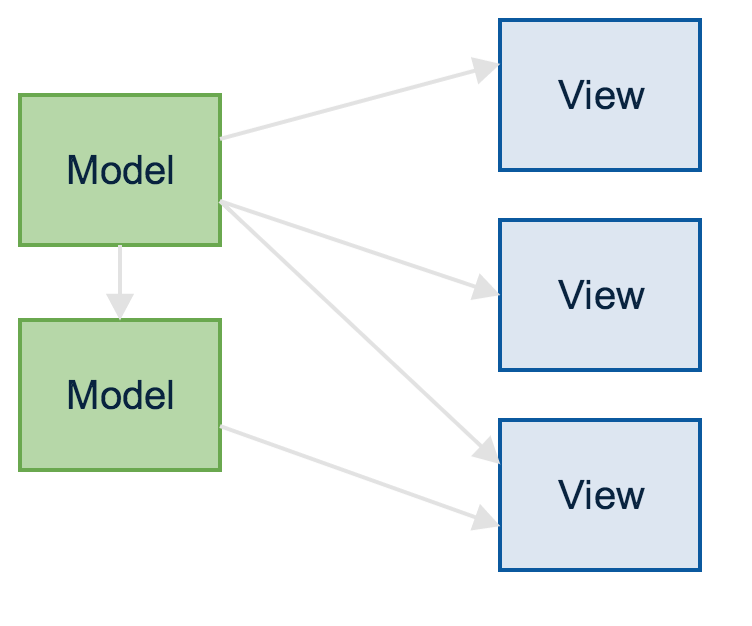
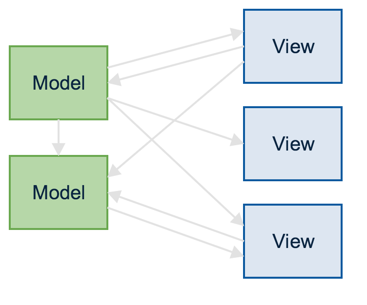

Redux
Presented by
Frederik Bouillon && Peter Cosemans
Three principles
- Single source of truth
- State is read-only
- Changes are made with pure functions
Why Redux?


Showtime
Redux
The end
Presented by
Frederik Bouillon && Peter Cosemans
The end